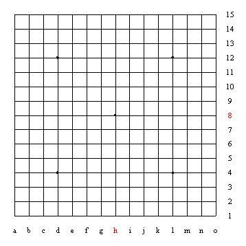

五子棋文化与知识连载(九)：五子棋棋具的介绍
#1 五子棋文化与知识连载(九)：五子棋棋具的介绍 作者：茗弈求学 发表时间：2010-3-16 13:03:26
中国棋院在线讯 《五子棋知识》第九章详细介绍了五子棋对弈中使用的棋具，详见如下内容。九、棋具
关于五子棋棋具的使用和标准，在《中国五子棋竞赛规则》中有详细的论述及严格的规定，在组织正规比赛时必须参照执行。在平时，下五子棋就不必要求过分严格了。我们在这里只介绍合乎规则标准的正规棋具。
(一)棋盘
棋盘可用木料、硬纸、塑料、布料、石料或环保材料等制成。
棋盘由横纵各15条等距离，垂直交叉的平行线构成，在棋盘上，横纵线交叉形成了225个交叉点为对弈时的落子点。邻近两个交叉点的距离要略大于棋子的直径，纵线距离约为2.5厘米，横线约为2.4厘米。
以对局开始时的黑方为准，棋盘上的纵行线从近到远用阿拉伯数字1——15标记，横行线从左到右用英文字母A——O按字母顺序标记。由于每个英文字母都对应着一条纵线，每个阿拉伯数字都对应着一条横线，所以，棋盘上的每一个交叉点都可用英文字母和阿拉伯数字的组合来标示出来。在标示各点时，要将英文字母放在前边，阿拉伯数字放在后边。如“L6”“F4”等，不可以标示成“6L”“4F”。
在棋盘上有5个比较特殊的交叉点，用直径约为0.5厘米的，和棋盘横纵线颜色相同的实心小圆点标示出来，这5个点称为“星”。中间的星也称天元，位置在H8，表示棋盘的正中心。其他4个星，也叫小星，分别在D12、L12、D4、L4位置。星在棋盘上起标示位置的作用，利于在行棋、复盘、记录等时，更清晰、迅速地找到所需位置。(如图3)

图11：棋盘
(二)棋子
棋子分黑白两色。
棋子形状为扁圆形，有一面凸起或两面凸起均可。
棋子厚度一般不超过0.8厘米，直径应比棋盘上邻近点间的距离略小些，以免影响在棋盘上的行棋。以2.0——2.3厘米为宜。
平时下棋，棋子数量不限，以下棋时够用为准。正规的标准数一般定为黑子113枚，白子112枚。
棋子材质，重量不限。但以硬质，不易磨损，且放在棋盘上具有一定稳定性为好。
我们谈到棋具，主要指上面论述的棋盘和棋子，有了这两样，开始下棋已够用了。
(三)谱纸
谱纸也可称记谱纸，顾名思意，它是用来记录对局或着法时所用的稿纸，主要用在比赛或练习时，记录对局双方行棋顺序和位置的专用纸。
谱纸的图形应是按比例缩小的棋盘图形。
(四)棋钟
棋钟是在练习或比赛时，计算棋类对局双方时间的专用钟。
棋钟分机械钟和电子钟等，均能用倒计时的方法，准确地分别显示出对局双方采用时限减去自己累计用时所剩余的时间。
棋钟要求尽量避免刺眼，运行时声响应很低弱或无声。
在这里，我们要说，棋具好坏是次要的，关键是你对棋的态度。只要你对棋恭，棋才对你顺。无论使用什么样的棋具，只要你认真对待下棋，其中的技巧和哲理总会逐步被你掌握的。
另一方面，如果经济条件允许，购置一套材质好些，外观漂亮的棋具，也会使你的心情舒畅，对棋兴趣更浓厚的，我们在购置棋具时，还要注意它的实效性，有一次，在赛场上就出现了棋手们不愿使用大会提供的赞助商赞助的高级玉质棋子，因为棋子过于透明、泛黄和反光，而要求换用普通棋子，听了这个例子，也许会对你购置棋具时的选择有些帮助。 中国棋院在线